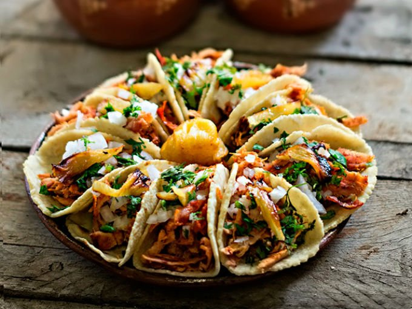

- Inicio
- Mi plato perfecto
- Mis recetas
Favoritos
Historial
40 Platillos Típicos De México Que Tienes Que Probar
99 Platillos de México que hay que probar al menos una vez en la vida
16 platillos mexicanos para deleitar tu paladar con comida típica mexicana
15 platillos mexicanos para celebrar el legendario y exquisito sabor de nuestra tierra
Platillos mexicanos con historia
DE MÉXICO PARA EL MUNDO 10 PLATILLOS MUY MEXICANOS
Recetas 100% mexicanas para preparar el platillo del día.

Chilaquiles en Salsa Verde
23 de mayo de 2018

Los chilaquiles representan una de las formas más tradicionales para deleitarse en los desayunos al estilo mexicano. Crujientes tortillas en forma de triángulos, baños en salsa de chile verde (o roja) que hacen que cada bocado sea una experiencia única. Acompañados con queso, cilantro, cebolla y una proteína (huevo, pollo o carne), son un platillo que irradia todo el sabor de México, no sin mencionar que su sabor es inigualable. Aquí te presentamos una forma sencilla para prepararlos en tu casa.
La mejor receta
Crujientes y picantes
No puedo esperar para cocinarle esto a mi marido
Tacos al Pastor
23 de mayo de 2018
El taco tradicional por excelencia de la gastronomía mexicana. Se trata de carne de cerdo, marinada en un sinfín de especies y chile en polvo, la cual se pone a girar y a cocinar lentamente en los famosos trompos: un aparto que dispone la carne en forma vertical y la calienta mientras esta gira. Envuelta en una o dos tortillas de maíz, se topea con piña, cebolla y cilantro para dar paso a una sinfonía de sabores que únicamente podría haber sido inventada en México. Aquí encontrarás una lista de los mejores sitios para comer tacos al pastor.
Bastante picantes, pero sabrosos
Llevaré a todo el mundo a probarlos
No me gustaron